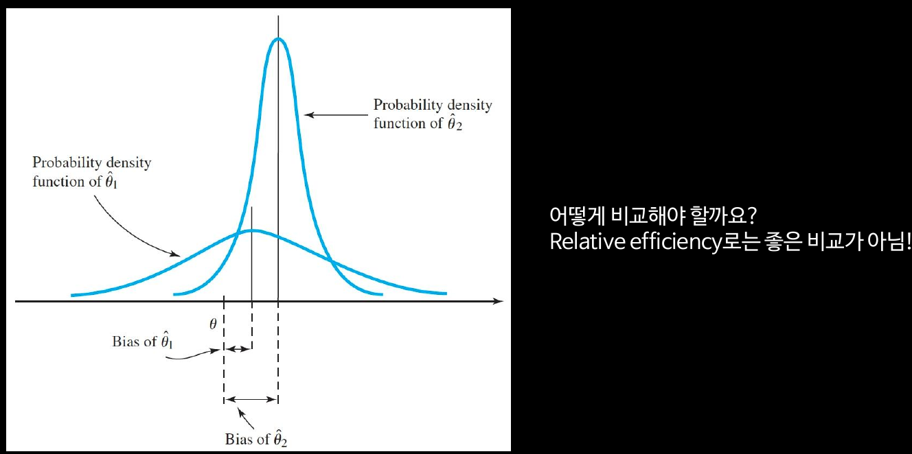

Probability and Statistics week 11
Code

이번 시간 할 일
Point estimation
Statistic
Upper case는 Random variable, lower case는 sample observations
Estimation
Unbiased estimators
Unbiased estimator of variance
더 좋은 estimator를 찾는 방법
Minimum variance unbiased estimator (MVUE)
Relative efficiency

Mean Squared Error (MSE)

Sampling distribution
Proof
Parameter를 추정하는 방법
Maximum likelihood estimation
unbiased estimator임을 보장하지 않음